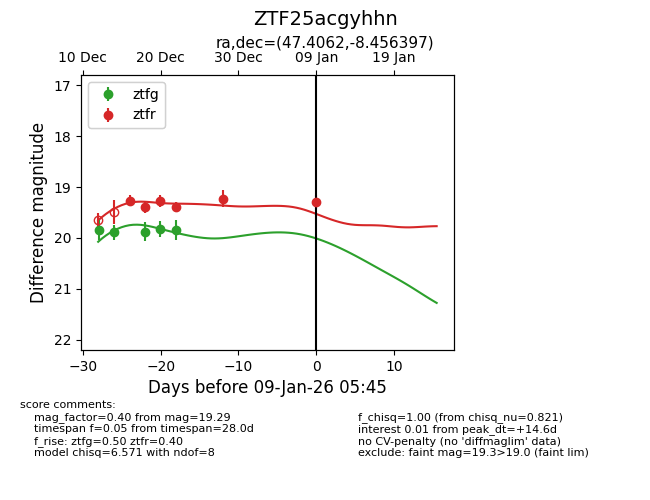
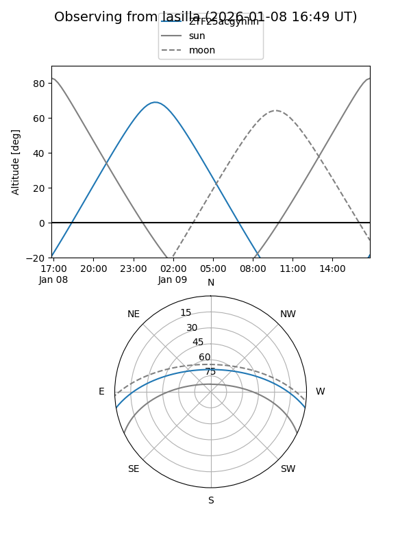

ZTF25acgyhhn
Target ZTF25acgyhhn at 2025-12-31 17:00
Aliases and brokers:
FINK:
Lasair:
ALeRCE:
alt names
ZTF25acgyhhn (ztf,fink_ztf)
Coordinates:
equatorial (ra, dec) = 47.4063,-8.45642
equatorial (HMS+DMS) = 03:09:37.50,-08:27:23.10
galactic (l, b) = (189.7141,-52.38562)
Flags:
Photometry:
last ztfg=19.84, ztfr=19.23
5 ztfg, 5 ztfr detections
Lightcurve

Visibility


Additional plots